IN — India
The main impact of a 200 basis-point (2.00 percentage-point) rise in United States interest rates on India is a 0.04% drop in GDP by the 11th quarter — a limited spillover. India ranks 19th by absolute GDP response and sits in the "minimal" band. The shock is a US monetary tightening; India's own policy response is endogenous, and the model traces how tighter global financial conditions feed through Indian asset prices, the currency, and demand. The peak GDP loss of −0.0393% of GDP arrives in Q11, and the path is small throughout: −0.0017% in Q1, deepening gradually through the first year, then fading after Q11 and turning slightly positive by Q19 (+0.0041%), ending Q20 at +0.009%. This is a modest, slow-building, and fully reversible spillover rather than a severe domestic contraction.
Demand and trade. Household consumption (Consumption) falls to a peak of −0.0157% of GDP in Q11, tracking the GDP path closely and fading to +0.0061% by Q20. Private investment (Investment) is hit harder and earlier, peaking at −0.1116% in Q8 as the cost of capital rises, before recovering strongly to +0.0593% by Q20. Net exports (the trade balance, since this model does not split imports from exports) improve, peaking at +0.0504% in Q8 and staying positive throughout, ending Q20 at +0.008% — the currency weakening does more for the trade balance than the demand drag does against it. Government spending (Gov Spending) rises modestly, peaking at +0.0063% in Q11 as automatic stabilisers and the policy response lean against the downturn, then fades to −0.0017% by Q20. Government debt (Gov Debt) falls relative to baseline, reaching −0.0244% in Q16 and −0.017% by Q20 — the fiscal position improves on net, reflecting the small scale of the shock.
External / FX. The real exchange rate (Currency Strength) appreciates to a peak of +0.3451% in Q8, meaning the currency is stronger than baseline, and it fades to roughly zero by Q20 (+0.0007%). This lines up with the net exports result: a stronger currency would normally hurt the trade balance, yet net exports improve. The reason is that the dominant force is the collapse in domestic demand, which cuts imports more than the stronger currency cuts exports, so the trade balance still improves even as the currency appreciates.
Labour. Employment falls to a peak loss of −0.0139% in Q14, a small decline that persists and ends Q20 at −0.0048%. Unemployment rises by a peak of 0.0026 percentage points in Q12 — a rounding-error-scale increase — and returns essentially to baseline by Q20 (−0.00004pp). Real wages first rise, peaking at +0.0256% in Q9 as inflation falls faster than nominal wages, then turn negative after Q15 and end Q20 at −0.0383%, the weakest point of the whole labour block.
Prices. CPI inflation rises by 0.0212 percentage points in Q1, the immediate peak, then fades quickly and turns negative by Q9, ending Q20 at −0.0016pp. Domestic inflation follows the same shape, peaking at +0.0149pp in Q1 and turning negative by Q9, ending at −0.0011pp. Firms' marginal cost falls to a peak of −0.0233% in Q11, then recovers and ends Q20 at +0.0055%. The initial inflation bump is a currency-driven price-level effect; the later disinflation reflects the demand weakness.
Financial conditions. The local policy rate rises initially, peaking at +0.0311pp in Q3, then falls sharply to a trough of −0.0467pp in Q14 as the central bank leans against the slowdown, ending Q20 at −0.0191pp. Government 2-year yields rise early (+0.0223pp in Q1), then fall to a trough of −0.0396pp in Q11, ending near zero. Government 5-year yields fall to −0.0172pp in Q8 and recover to +0.0079pp by Q20. Government 10-year yields fall only slightly, to −0.0044pp in Q9, ending at +0.0043pp. Bond prices fall to a peak loss of −0.2751% in Q8, then swing positive from Q12 and end Q20 at +0.0953%. Equity prices fall to a peak of −0.3771% in Q8, the largest single response in the model, then recover and turn positive by Q20 (+0.0144%). Tobin's Q (the value of installed capital) falls to −0.0781% in Q8 and recovers to +0.0415% by Q20. House prices decline steadily to a peak of −0.0348% in Q14 and remain negative, ending Q20 at −0.0215%. Bank credit contracts only marginally, to −0.0028% in Q16, ending at −0.0025%. Lending spreads widen by a trivial 0.0001pp at peak — effectively unchanged.
Sectoral and capital. Manufacturing GDP is the hardest-hit production sector, falling to −0.1061% in Q8, then recovering to +0.0065% by Q20. Services GDP falls to −0.0216% in Q11 and recovers to +0.005% by Q20. The capital stock declines very slightly, to −0.0046% in Q14, ending Q20 at −0.0033% — the investment slump barely dents the aggregate capital stock over this horizon.
Timing. The GDP hit is largest in Q11 at −0.0393%, builds gradually from a near-zero Q1, and has mostly faded by Q17, turning positive in Q19. By Q20 the GDP effect is +0.009%, so the shock does not persist.
Close. These are model impulse responses relative to baseline, not forecasts. They describe how India's economy deviates from its no-shock path after a 200bp US rate rise, under the model's estimated transmission channels.
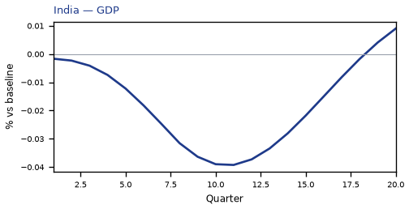
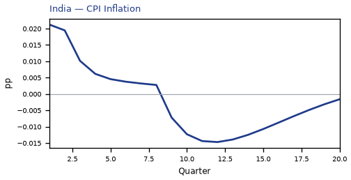
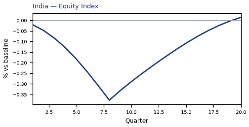
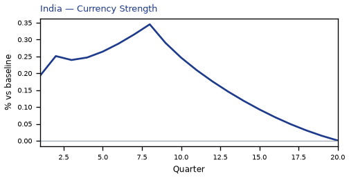
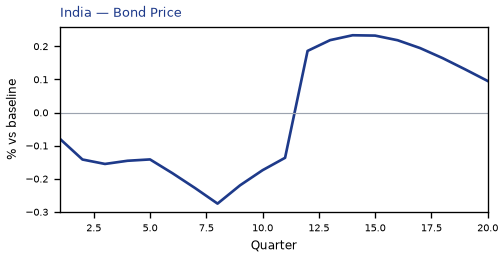
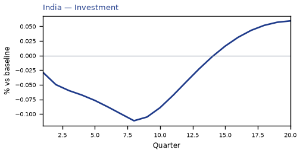
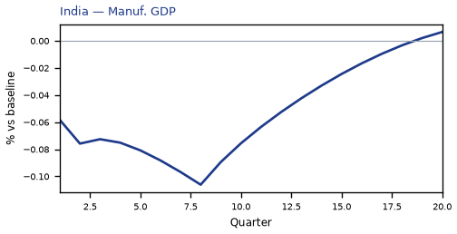
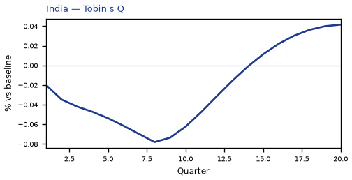
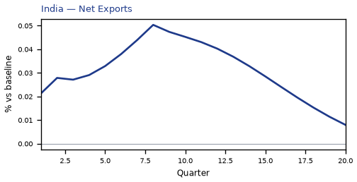

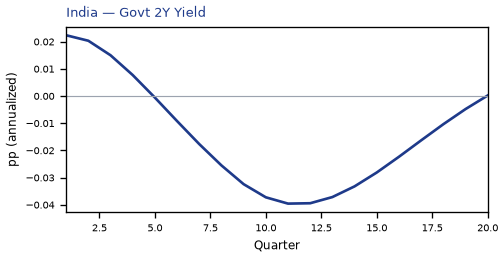
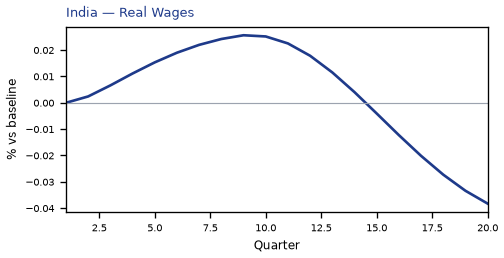
source=live · global_macro_v5 · contract v6 · Q1–Q20 JSON · not financial advice